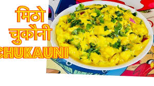

Chukauni Recipe

Ingredients:
- 2 large potatoes, boiled, peeled, and diced
- 1 cup yogurt
- 1 tablespoon mustard oil
- 1/2 teaspoon fenugreek seeds
- 1/2 teaspoon cumin seeds
- 1/2 teaspoon turmeric powder
- 1/2 teaspoon red chili powder
- Salt to taste
- 2-3 green chilies, finely chopped
- 2 tablespoons cilantro, chopped
Procedures:
- In a bowl, mix boiled and diced potatoes with yogurt.
- Heat mustard oil in a pan and add fenugreek seeds and cumin seeds. Let them splutter.
- Add turmeric powder, red chili powder, and salt to the pan. Mix well.
- Pour the spice mixture over the potato and yogurt mixture. Mix everything well.
- Add chopped green chilies and cilantro. Mix again.
- Chill the Chukauni in the refrigerator for about 30 minutes.
- Serve cold as a side dish or snack.